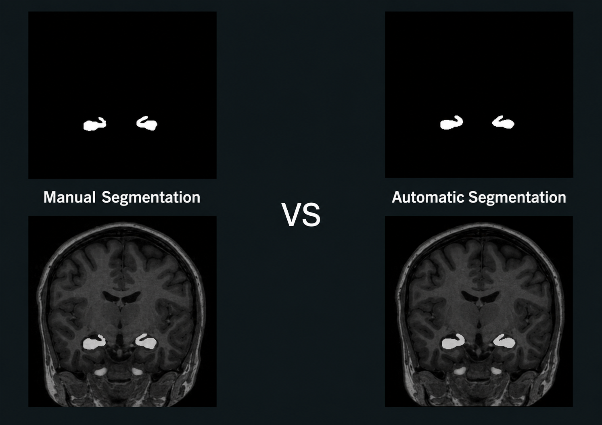

Hippocampus segmentation & Alzheimer's riskSegmentation de l'hippocampe et risque d'Alzheimer
From an MRI slice to a risk indicator a clinician can question.D'une coupe IRM à un indicateur de risque qu'un clinicien peut interroger.
Project: an automated pipeline trained on 426 2D brain MRI images to segment the hippocampus, measure its surface, and compare it against a sex-specific threshold to flag atrophy associated with elevated Alzheimer's risk.Projet : un pipeline automatisé entraîné sur 426 images IRM cérébrales 2D pour segmenter l'hippocampe, mesurer sa surface, et la comparer à un seuil spécifique au sexe afin de signaler une atrophie associée à un risque accru d'Alzheimer.
- TypeType
- Academic project (MSc)Projet académique (Master)
- InstitutionÉtablissement
- Universite Clermont AuvergneUniversité Clermont Auvergne
- ModalityModalité
- Brain MRI, 2DIRM cérébrale, 2D
- DatasetDataset
- 426 2D MRI images426 images IRM 2D
- ResultRésultat
- Dice 0.91Dice 0,91
01
SegmentationSegmentation
The work started with a literature review of state-of-the-art hippocampus segmentation, then moved to designing and training a modified 2D U-Net on 426 annotated 2D MRI images, evaluated against expert annotations.Le travail a commencé par une revue de littérature sur les méthodes de segmentation de l'hippocampe à l'état de l'art, avant la conception et l'entraînement d'un U-Net 2D modifié sur 426 images IRM 2D annotées, évalué contre des annotations expertes.
Result: Dice 0.91.Résultat : Dice 0,91.
Tools:Outils : Python · TensorFlow · U-Net

02
From a mask to a risk predictionDu masque à une prédiction de risque
The output is a risk prediction based on the measured values. The user can see both the predicted risk and the measurements used to calculate it.La sortie est une prédiction de risque basée sur les valeurs mesurées. L'utilisateur peut voir à la fois le risque prédit et les mesures utilisées pour le calculer.
03
InterfaceInterface
I developed a desktop application with PyQt and integrated the trained model directly into it. The application provides the full workflow in one interface: load the MRI image, run the segmentation, visualize the results, view the measurements and display the predicted risk.J'ai développé une application desktop avec PyQt et intégré le modèle entraîné directement dedans. L'application fournit le workflow complet dans une seule interface : charger l'image IRM, lancer la segmentation, visualiser les résultats, consulter les mesures et afficher le risque prédit.
The application was designed to make the model easy to use without requiring any code or command line.L'application a été conçue pour rendre le modèle facile à utiliser, sans nécessiter de code ni de ligne de commande.
Tools:Outils : Python · PyQt
Academic research prototype. No clinical validation, no regulatory clearance, and not a diagnostic tool. The threshold flags a statistical association, not a diagnosis.Prototype de recherche académique. Aucune validation clinique, aucun marquage réglementaire, et ce n'est pas un outil de diagnostic. Le seuil signale une association statistique, pas un diagnostic.
Contact
Tell me about your data and your goal.Parlez-moi de vos données et de votre objectif.
Open to roles in medical imaging, computer vision and AI. I focus on building solutions that are both technically sound and clinically relevant.Ouvert aux postes en imagerie médicale, vision par ordinateur et IA. Je me concentre sur la construction de solutions à la fois techniquement solides et cliniquement pertinentes.